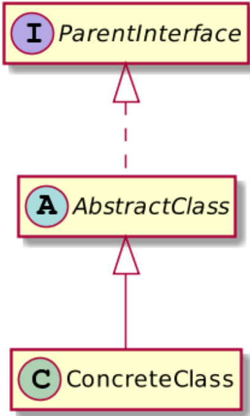

一、前言
如果你学习过其他语言或者接触过其它语言的开发人员，你会发现Java开发人员好像更加倾向于过度设计。
也许是因为Java开发比较传统，也许是因为这是你的老师（教学视频、教学文档）教过你的。我在检查自己之前的代码的时候发现，尽管我尽量会在编写代码时不过度设计，但是总归会有许多不当的地方。
当然，你可能认为，你只是一个“初级”的开发人员，只有架构师才资格设计，所以只有他们才能承担过度工程的责任，对吗？恐怕并非如此，无数的开发人员一直都在这样做。在本文中，我将重点一个过度设计的症状，并将其扩展到其他方面。
二、过度设计
我在学生时期，我曾试图设计我的班级层次结构，并使其尽可能地可扩展，所以将它转换为由具体类实现的父接口。它们之间可能只有一个抽象类。像下面的图：

这看起来非常完美，构成了可扩展的层次结构，并且实现了面向接口编程。
在 Spring 的生态环境中，大量使用了类似这种形式的设计方案。例如 ViewResolver 接口，它具有丰富的子级层次结构和非常多的实现类。（例如：InternalResourceViewResolver、VelocityLayoutViewResolver）。在框架的其他部分也有非常多的示例（beanFactory、ApplicationContext）。
但是，要明白的一些重点是：
- Spring 在层次化的结构设计中组织了许多不同的子类。
- Spring 是一个框架，框架的含义是可扩展，不可修改。
在我们写过的大多数 Spring Web 程序中。找到我们定义的接口（Controller、Service、Dao），会发现，大多数情况下，他们的实现类只有一个，而且可能会用 Impl 为后缀。如果接口位于 xyz 包中，那么实现类就会在 xyz.impl 包中，不知道大家会不会对与此种设计感到好奇？为什么要这样做？我们很难为接口的实现类提供一个相关的名称，因为实现类和接口之间没有语义上的区别，即实现类没有专门化接口。基于此得出的结论是：这种接口不是必须的。
一些高级开发人员可能会说：“即便现在没有用，抽象设计在以后也有用！”。但是，为了将来的可能会有用这一点而在现在加入了一堆不必要的东西，只会浪费前期时间，而且对于大多数的 Web 程序来说，以后也不会有用。这种设计方法无疑与敏捷开发相冲突。
当然，即使在以后真的有这种需求了，借助现代 IDE 的重构功能，也可以很方便的修改程序。
早期的 Spring 动态代理只有 JDK 的动态代理，新版本的 Spring 早已经支持了 cglib 代理方式，所以创建一个接口只是为了可以实现动态代理这方面也是不成立的。
三、后记
如果有人说我设计接口就是为了未来做准备，那我我就非要说你这是过度设计。
无用的接口只是过度设计的一个方面，另外的许许多多方面都有过度设计的影子，这是 Java 开发的特性，无法改变。
如果你喜欢或者讨厌这篇文章，可以评论或者转发。